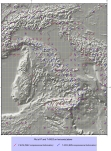

An Atlas of Mediterranean seismicity
Maps of earthquake focal mechanisms
Cross sections

Maps of cumulative equivalent mechanisms

Maps of horizontal projections of P and T axes

Miscellaneous maps (geology and seismicity)
Summary cards on a regular grid 1X1 degrees

Summary cards on a regular grid 0.5X0.5 degrees

Summary cards for seismic zones of Mediterranean

Maps and summary cards for Seismic Zonation ZS9